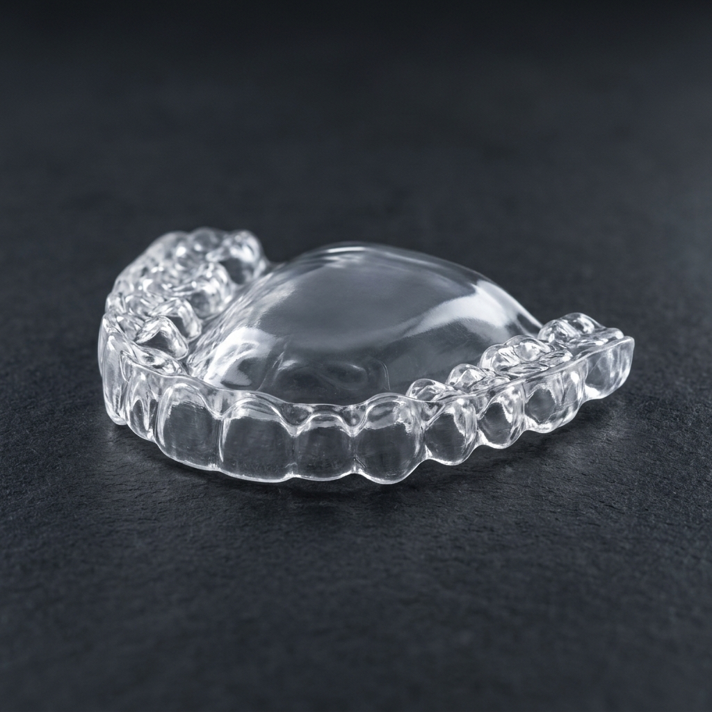

Você frequentemente acorda com dores de cabeça tensionais, dor no pescoço ou sensação de cansaço nos músculos da face? Sente o maxilar estalar ao abrir a boca ou ao mastigar? Se a resposta for sim, você pode estar sofrendo de bruxismo.
O que é o Bruxismo?
O bruxismo é um distúrbio caracterizado pelo ato inconsciente de apertar ou ranger os dentes. Ele pode ocorrer tanto durante o sono (bruxismo noturno) quanto durante o dia (bruxismo de vigÃlia), e está fortemente associado ao estresse e à ansiedade da vida moderna.
Principais Sintomas
Muitas pessoas não sabem que têm bruxismo até irem ao dentista ou até alguém reclamar do barulho de ranger os dentes à noite. Fique atento aos sinais:
- Desgaste no esmalte dos dentes (os dentes ficam mais curtos e retos na ponta).
- Aumento da sensibilidade dentária (devido ao desgaste do esmalte).
- Dor frequente na articulação temporomandibular (ATM), que fica na frente do ouvido.
- Estalos ao abrir e fechar a boca.
- Dor de cabeça matinal, especialmente nas têmporas.
Como Tratar o Bruxismo?
Embora não exista uma "cura" definitiva (pois a causa costuma ser multifatorial, envolvendo fatores emocionais e neurológicos), existem tratamentos muito eficazes para proteger seus dentes e aliviar as dores:
1. Placa de Mordida (Placa de Bruxismo)
É o tratamento mais comum e essencial. O dentista confecciona uma placa de acrÃlico ou silicone rÃgido sob medida para encaixar sobre os dentes superiores ou inferiores. Usada principalmente à noite, a placa impede o atrito entre os dentes, evitando o desgaste, e ajuda a relaxar a musculatura da face.
2. Toxina BotulÃnica (Botox) Terapêutico
Cada vez mais utilizado na odontologia, o Botox é aplicado diretamente no músculo masseter (o principal músculo da mastigação). Ele reduz a força da contração muscular sem afetar a sua capacidade de mastigar e falar normalmente. É um alÃvio rápido e duradouro para as dores tensionais.
3. Controle do Estresse
Atividades de relaxamento, terapia e higiene do sono são fundamentais para tratar a raiz do problema do bruxismo.
Não deixe o bruxismo destruir seus dentes
Agende uma avaliação e descubra o melhor tratamento para devolver seu conforto.
Agendar Avaliação